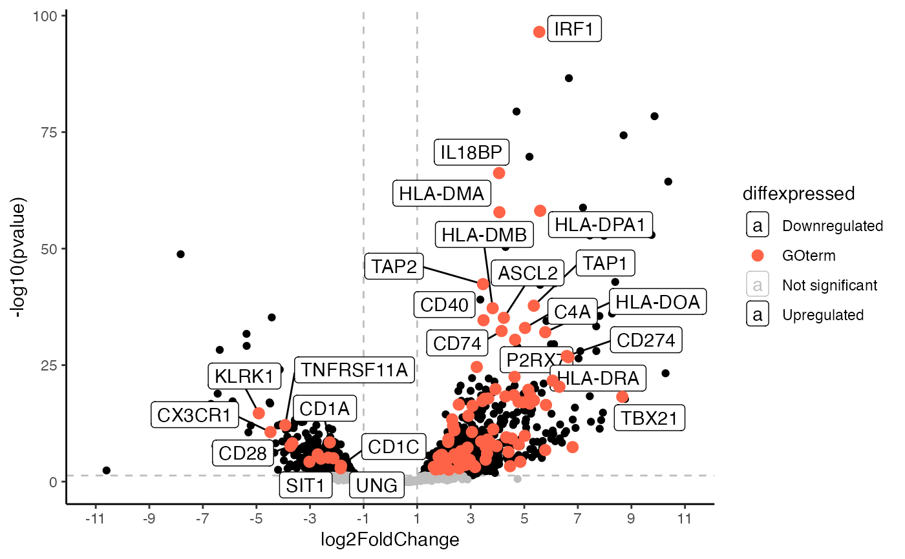

Generates a volcano plot using ggplot2 This function generates a base volcano plot highlighting genes associated with a certain GOterm that can then be expanded upon using further ggplot functions.
Source:R/plot_de_summaries.R
go_volcano.RdGenerates a volcano plot using ggplot2 This function generates a base volcano plot highlighting genes associated with a certain GOterm that can then be expanded upon using further ggplot functions.
Usage
go_volcano(
res_de,
res_enrich,
mapping = "org.Hs.eg.db",
term_index,
logfc_cutoff = 1,
FDR = 0.05,
draw_FDR_line = FALSE,
col_to_use = NULL,
enrich_col = "genes",
gene_col_separator = ",",
down_col = "black",
up_col = "black",
highlight_col = "tomato",
n_overlaps = 20
)Arguments
- res_de
An object containing the results of the Differential Expression analysis workflow (e.g.
DESeq2,edgeRorlimma). Currently, this can be aDESeqResultsobject created using theDESeq2framework.- res_enrich
A enrichment result object created by for example using
run_topGO()- mapping
Which
org.XX.eg.dbpackage to use for annotation - select according to the species- term_index
The location (row) of your GO term of interest in your enrichment result
- logfc_cutoff
A numeric value that sets the cutoff for the xintercept argument of ggplot
- FDR
The pvalue threshold to us for counting genes as de and therefore also where to draw the line in the plot. Default is 0.05
- draw_FDR_line
Logical, whether to draw a line at the p-value corresponding to the specified FDR. Defaults to FALSE.
- col_to_use
The column in your differential expression results containing your gene symbols. If you don't have one it is created automatically
- enrich_col
column name from your res_enrich where the genes associated with your GOterm are stored (for example see the
run_topGO()result in mosdef)- gene_col_separator
The separator used to split the genes. If you used topGO or goseq this is a "," which is the default. (For an example see the
run_topGO()result in mosdef) If you used clusterProfiler this has to be set to "/". (For example see therun_cluPro()result in mosdef)- down_col
The colour for your downregulated genes, default is "gray"
- up_col
The colour for your upregulated genes, default is "gray"
- highlight_col
The colour for the genes associated with your GOterm default is "tomato"
- n_overlaps
Number of overlaps ggrepel is supposed to allow when labeling (for more info check ggrepel documentation)
Examples
library("org.Hs.eg.db")
data(res_de_macrophage, package = "mosdef")
data(res_enrich_macrophage_topGO, package = "mosdef")
p <- go_volcano(
res_macrophage_IFNg_vs_naive,
res_enrich = res_enrich_macrophage_topGO,
term_index = 1,
logfc_cutoff = 1,
mapping = "org.Hs.eg.db",
n_overlaps = 20
)
#> 'select()' returned 1:many mapping between keys and columns
p
#> Warning: Removed 17706 rows containing missing values or values outside the scale range
#> (`geom_label_repel()`).
#> Warning: ggrepel: 68 unlabeled data points (too many overlaps). Consider increasing max.overlaps
